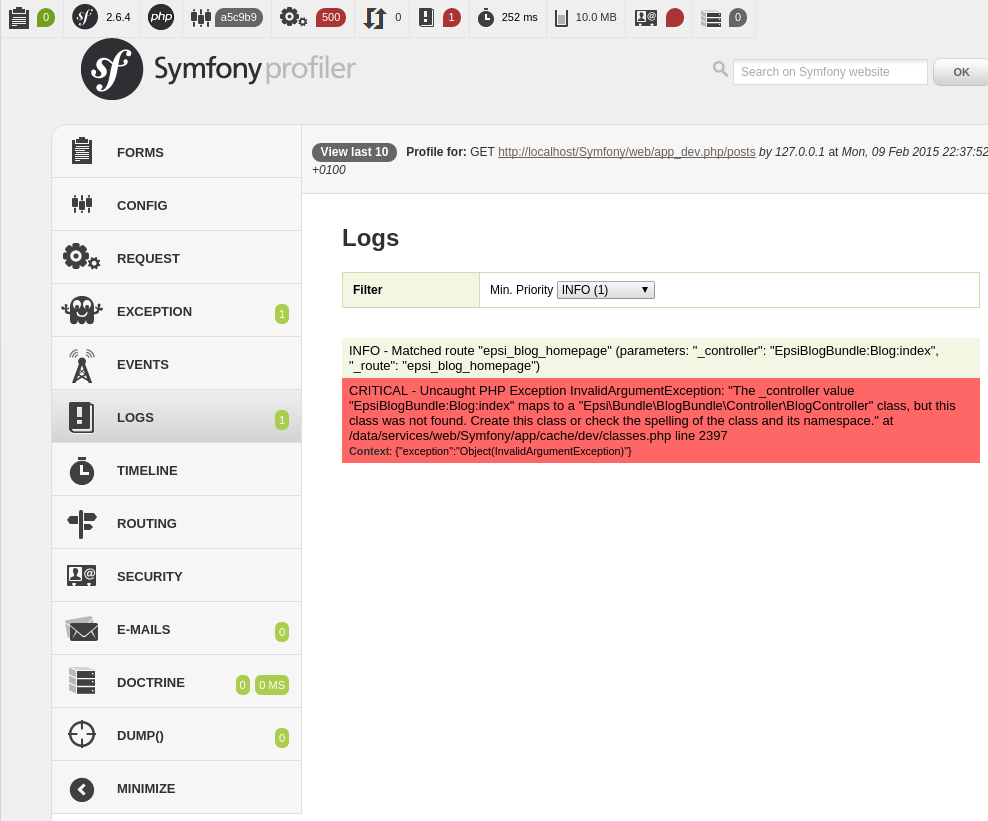

Le routing¶
Le routing fait la correspondance entre les URLs et les les contrôleurs. La configuration de ce mapping se fait dans les fichiers routing.yml se trouvant dans le répertoire config de l’application et des bundles.
Créons les premières routes de notre blog :
# src/Epsi/Bundle/BlogBundle/Resources/config/routing.yml
epsi_blog_homepage:
path: /posts
defaults: { _controller: EpsiBlogBundle:Blog:index }
epsi_blog_show:
path: /post/{id}
defaults: { _controller: EpsiBlogBundle:Blog:show }
epsi_blog_add:
path: /post/add
defaults: { _controller: EpsiBlogBundle:Blog:add }
Format de fichiers YAML
L’indentation des fichiers YAML se fait avec des espaces et non des indentations.
Fonctionnement¶
Les routes ci-dessus sont composés de trois éléments :
- un identifiant. Il doit être unique dans l’application, c’est pour cela que l’on reprend les éléments du nom du bundle ;
- un chemin (
path). C’est URL de la route. Les éléments entre{}sont des paramètres de l’URL, comme l’ID d’un objet ; - les paramètres de la route
defaultsqui contient notamment le contrôleur à appeler.
Voici comment fonctionne le routeur pas à pas :
On appelle l’URL
/post/5;Le routeur essaie de faire correspondre cette URL avec le
pathde la première route. Ici,/post/5ne correspond pas du tout à/posts(lignepathde la première route) ;- Le routeur passe donc à la route suivante. Il essaie de faire correspondre
/post/5avec/post/{id}. Cette route correspond, car nous avons bien : /post(URL) =/post(route) ;5(URL) ={id}(route) ;
- Le routeur passe donc à la route suivante. Il essaie de faire correspondre
Le routeur s’arrête donc, il a trouvé sa route ;
Dans le paramétrage de la route, il trouve quel contrôleur appeler :
EpsiBlogBundle:Blog:show;Le routeur renvoie donc ces informations au Kernel ;
Le noyau va exécuter le contrôleur.
Dans le cas où le routeur ne trouve pas de correspondance pour une URL, il renvoi une erreur 404.
Allons sur la page http://localhost/Symfony/web/app_dev.php/post/5 :

En haut de la page est affiché un message d’erreur, un exception a été détectée.
Dans la seconde partie, la stack trace. Il s’agit de la liste des fonctions appelées depuis le contrôleur frontal jusqu’à la ligne qui a levé l’exception.
Tout en bas, on trouve le Profiler, un outil de développement où l’on peut trouver de nombreuses informations pouvant aider à la correction de bugs et d’erreurs, ou à l’optimisation. En cliquant sur la barre de profiling, on arrive sur une interface plus complète :
Convention de nommage des contrôleurs¶
Revenons à vos route. Lors de la configuration des routes dans le fichier routing.yml, les contrôleurs sont spécifiés avec la notation suivante EpsiBlogBundle:Blog:index. Elle est composée de trois éléments :
EpsiBlogBundle: le nom du bundleBlog: le nom du contrôleur à ouvrir, en terme de fichier, cela correspond àcontroller/BlogController.phpshow: le nom de l’action à exécuter au sein du contrôleur, il s’agit de la fonctionpublic function showAction()implémentée dans le contrôleurBlog
Faisons rapidement un contrôleur pour afficher autre chose qu’une erreur :
namespace Epsi\Bundle\BlogBundle\Controller;
use Symfony\Bundle\FrameworkBundle\Controller\Controller;
use Symfony\Component\HttpFoundation\Response;
class BlogController extends Controller {
public function showAction($id) {
// On fera des truc ici, plus tard
return new Response("Affichage du post avec l'id : " . $id . ".");
}
}
Lorsq’on va sur la page http://localhost/Symfony/web/app_dev.php/post/5, elle affiche “Affichage du post avec l’id : 5.”.
Contrôles des paramètres des routes¶
Lorsq’on va sur la page http://localhost/Symfony/web/app_dev.php/post/fvndfjvnj, elle affiche “Affichage du post avec l’id : fvndfjvnj.”. Donc ajoutons un validation pour vérifier que l’ID soit bien un entier.
La validation des paramètres se fait grâce à des expressions régulières. Voici les éléments de base pour les construire :
[abc]: le caractère “a”, “b” ou “c”[^abc]: n’importe quel caractère sauf “a”, “b”, ou “c”[a-z]: n’importe quel caractère dans l’intervalle a-z[a-zA-Z]: n’importe quel caractère dans les intervalles a-z ou A-Z^: début de ligne$: fin de ligne.: n’importe quel caractère unique\s: tout caractère blanc\S: tout caractère qui n’est pas un caractère blanc\d: tout caractère décimal\D: tout caractère qui n’est pas un caractère décimal\w: tout caractère de “mot” (lettre, nombre, underscore)\W: tout caractère qui n’est pas un caractère de “mot”\b: limite de mot(...): sous ensemble(a|b): “a” ou “b”a?: zéro ou un “a”a*: zéro “a” ou plusa+: un “a” ou plusa{3}: exactement trois “a”a{3,}: trois “a” ou plusa{3,6}: entre trois ou six “a”
L’ID est un chiffre qui sera composé de un ou plusieurs chiffres, ce qui nous donne : \d+.
Ajoutons cette règle dans le routing.yml :
epsi_blog_show:
path: /post/{id}
defaults: { _controller: EpsiBlogBundle:Blog:show }
requirements:
id: \d+
Ensuite lorsqu’on recharge les deux pages précédentes, http://localhost/Symfony/web/app_dev.php/post/5 affiche “Affichage du post avec l’id : 5.”. http://localhost/Symfony/web/app_dev.php/post/fvndfjvnj affiche une message d’erreur.
On peut également utiliser des paramètres suivants :
epsi_blog_show:
path: /post/{id}
defaults: { _controller: EpsiBlogBundle:Blog:show }
requirements:
id: \d+
_format: html|xml|json
Avec cette route, les URL suivantes vont valides :
Paramètres spéciaux de routing¶
Il existe trois paramètres spéciaux :
_controller: comme nous l’avons vu, ce paramètre est utilisé pour déterminer quel contrôleur est exécuté lorsque l’URL est reconnue ;_format: il est utilisé pour définir le format de la requêteLorsque vous utilisez ce paramètre Symfony va automatique remplir le header
Content-Typeavec la bonne valeur en fonction du format demandé. Dans le contrôleur, on peut récupérer sa valeur avec$this->get('request')->getRequestFormat()._locale: il est utilisé pour définir la locale de la sessionCe paramètre permet de choisir la langue à afficher. Cette valeur sera également stockée en session pour que les futures requêtes la conservent. Dans le contrôleur, on peut récupérer sa valeur avec
$this->get('request')->getLocale().
Comment générer des URL ?¶
Depuis un contrôleur, c’est la méthode $this->generateUrl() qu’il faut appeler. Par exemple : $url = $this->generateUrl( 'epsi_blog_show', array( 'id' => $id ) );
Depuis les tempaltes Twig, on utilise l’opérateur path. Par exemple : {{ path( 'epsi_blog_show', { 'id': article_id } ) }}
Créons les routes du blog¶
Nous voulons créer les pages suivantes :
- liste des posts du blog, qui sera aussi la page d’accueil
- visualisation d’un post
- ajout d’un post
- modification d’un post
- suppression d’un post
Liste des posts¶
Pour la page d’accueil, nous souhaitons mettre en place une pagination et avoir les URL suivantes :
/blogs: page = 1/blogs/1: page = 1/blogs/2: page = 2/blogs/n: page = n
Le numéro de la page sera récupéré dans un paramètre {page} qui devra être composer de zéro ou plusieurs chiffres. Voici la route :
epsi_blog_show:
path: /post/{id}
defaults: { _controller: EpsiBlogBundle:Blog:show }
requirements:
id: \d+
_format: html|xml|json
Visualisation d’un post¶
epsi_blog_show:
path: /post/{id}.{_format}
defaults: { _controller: EpsiBlogBundle:Blog:show, _format: html }
requirements:
id: \d+
_format: html|xml|json
Ajout d’un post¶
epsi_blog_add:
path: /post/add
defaults: { _controller: EpsiBlogBundle:Blog:add }
Modification d’un post¶
epsi_blog_edit:
path: /post/{id}/edit
defaults: { _controller: EpsiBlogBundle:Blog:edit }
requirements:
page: \d+
Suppression d’un post¶
epsi_blog_delete:
path: /post/{id}/delete
defaults: { _controller: EpsiBlogBundle:Blog:delete }
requirements:
page: \d+